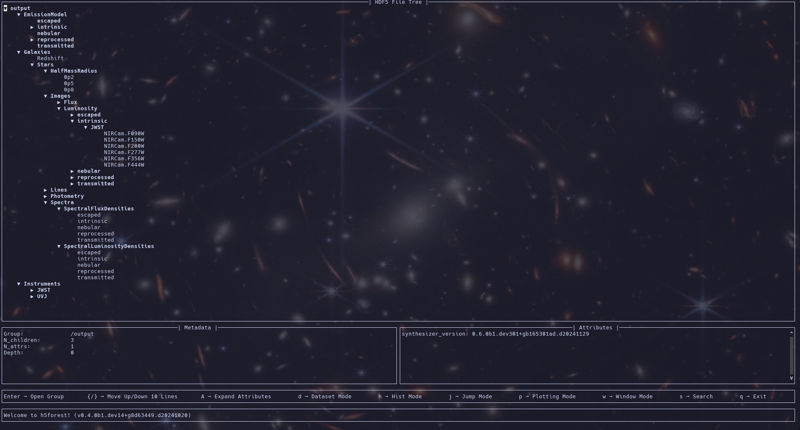

The Pipeline¶
If you have a galaxy catalog (either of Parametric origin or from a simulation), an `EmissionModel <../emission_models/emission_models.rst>`__, and a set of instruments you want observables for, you can easily write a pipeline to generate the observations you want using the Synthesizer UI. However, lets say you have a new catalog you want to run the same analysis on, or a whole different set of instruments you want to use. You could
modify your old pipeline or write a whole new pipeline, but thats a lot of work and boilerplate.
This is where the Pipeline shines. Instead, of having to write a pipeline, the Pipeline class is a high-level interface that allows you to easily generate observations for a given catalog, emission model, and set of instruments. All you need to do is set up the Pipeline object, attach the galaxies, and run the observable methods you want to include. Possible observables include:
Spectra.
Emission Lines.
Photometry.
Images (with or without PSF convolution/noise).
Spectral data cubes (IFUs) [WIP].
Instrument specific spectroscopy [WIP].
The Pipeline will generate all the requested observations for all (compatible) instruments and galaxies, before writing them out to a standardised HDF5 format.
As a bonus, the abstraction into the Pipeline class allows for easy parallelization of the analysis, not only over local threads but distributed over MPI.
In the following sections we will show how to instantiate and use a Pipeline object to generate observations for a given catalog, emission model, and set of instruments.
Setting up a Pipeline object¶
Before we instatiate a pipeline we need to define its “dependencies”. These are an emission model, a set of instruments, and importantly some galaxies to observe.
Defining an emission model¶
The EmissionModel defines the emissions we’ll generate, including its origin and any reprocessing the emission undergoes. For more details see the EmissionModel docs.
For demonstration, we’ll use a simple premade IntrinsicEmission model which defines the intrinsic stellar emission (i.e. stellar emission without any ISM dust reprocessing).
[1]:
from synthesizer.emission_models import IntrinsicEmission
from synthesizer.grid import Grid
# Get the grid
grid_dir = "../../../tests/test_grid/"
grid_name = "test_grid"
grid = Grid(grid_name, grid_dir=grid_dir)
model = IntrinsicEmission(grid, fesc=0.1)
model.set_per_particle(True) # we want per particle emissions
Defining the instruments¶
We don’t need any instruments if all we want is spectra at the spectral resolution of the Grid or emission lines. However, to get anything more sophisticated we need Instruments that define the technical specifications of the observations we want to generate. For a full breakdown see the instrumentation docs.
Here we’ll define a simple set of instruments including a subset of NIRCam filters (capable of imaging with a 0.1 kpc resolution) and a set of UVJ top hat filters (only capable of photometry).
[2]:
import numpy as np
from unyt import angstrom, kpc
from synthesizer.instruments import UVJ, FilterCollection, Instrument
# Get the filters
lam = np.linspace(10**3, 10**5, 1000) * angstrom
webb_filters = FilterCollection(
filter_codes=[
f"JWST/NIRCam.{f}"
for f in ["F090W", "F150W", "F200W", "F277W", "F356W", "F444W"]
],
new_lam=lam,
)
uvj_filters = UVJ(new_lam=lam)
# Instatiate the instruments
webb_inst = Instrument("JWST", filters=webb_filters, resolution=0.1 * kpc)
uvj_inst = Instrument("UVJ", filters=uvj_filters)
instruments = webb_inst + uvj_inst
print(instruments)
+--------------------------------------+
| INSTRUMENT COLLECTION |
+-------------------+------------------+
| Attribute | Value |
+-------------------+------------------+
| ninstruments | 2 |
+-------------------+------------------+
| instrument_labels | [JWST, UVJ, ] |
+-------------------+------------------+
| instruments | JWST: Instrument |
| | UVJ: Instrument |
+-------------------+------------------+
Loading galaxies¶
You can load galaxies however you want but for this example we’ll load some CAMELS galaxies using the load_data module.
[3]:
from synthesizer.load_data.load_camels import load_CAMELS_IllustrisTNG
# Create galaxy object
galaxies = load_CAMELS_IllustrisTNG(
"../../../tests/data/",
snap_name="camels_snap.hdf5",
group_name="camels_subhalo.hdf5",
physical=True,
)
Instantiating the Pipeline object¶
Now we have all the ingredients we need to instantiate a Pipeline object. All we need to do now is pass them into the Pipeline object alongside the number of threads we want to use during the analysis (in this notebook we’ll only use 1 for such a small handful of galaxies).
[4]:
from synthesizer.pipeline import Pipeline
pipeline = Pipeline(
emission_model=model,
instruments=instruments,
nthreads=1,
verbose=1,
)
⠀⠀⠀⠀⠀⠀⠀⠀⠀⠀⢀⣀⣀⡀⠒⠒⠦⣄⡀⠀⠀⠀⠀⠀⠀⠀
⠀⠀⠀⠀⠀⢀⣤⣶⡾⠿⠿⠿⠿⣿⣿⣶⣦⣄⠙⠷⣤⡀⠀⠀⠀⠀
⠀⠀⠀⣠⡾⠛⠉⠀⠀⠀⠀⠀⠀⠀⠈⠙⠻⣿⣷⣄⠘⢿⡄⠀⠀⠀
⠀⢀⡾⠋⠀⠀⠀⠀⠀⠀⠀⠀⠐⠂⠠⢄⡀⠈⢿⣿⣧⠈⢿⡄⠀⠀
⢀⠏⠀⠀⠀⢀⠄⣀⣴⣾⠿⠛⠛⠛⠷⣦⡙⢦⠀⢻⣿⡆⠘⡇⠀⠀
⠀⠀⠀+-+-+-+-+-+-+-+-+-+-+-+⡇⠀⠀
⠀⠀⠀|S|Y|N|T|H|E|S|I|Z|E|R|⠃⠀⠀
⠀⠀⢰+-+-+-+-+-+-+-+-+-+-+-+⠀⠀⠀
⠀⠀⢸⡇⠸⣿⣷⠀⢳⡈⢿⣦⣀⣀⣀⣠⣴⣾⠟⠁⠀⠀⠀⠀⢀⡎
⠀⠀⠘⣷⠀⢻⣿⣧⠀⠙⠢⠌⢉⣛⠛⠋⠉⠀⠀⠀⠀⠀⠀⣠⠎⠀
⠀⠀⠀⠹⣧⡀⠻⣿⣷⣄⡀⠀⠀⠀⠀⠀⠀⠀⠀⠀⢀⣠⡾⠃⠀⠀
⠀⠀⠀⠀⠈⠻⣤⡈⠻⢿⣿⣷⣦⣤⣤⣤⣤⣤⣴⡾⠛⠉⠀⠀⠀⠀
⠀⠀⠀⠀⠀⠀⠈⠙⠶⢤⣈⣉⠛⠛⠛⠛⠋⠉⠀⠀⠀⠀⠀⠀⠀⠀
⠀⠀⠀⠀⠀⠀⠀⠀⠀⠀⠀⠀⠉⠉⠉⠁⠀⠀⠀⠀⠀⠀⠀⠀⠀⠀
[00000.00]: Root emission model: intrinsic
[00000.00]: EmissionModel contains 5 individual models.
[00000.00]: EmissionModels split by emitter:
[00000.00]: - galaxy: 0
[00000.00]: - stellar: 5
[00000.00]: - blackhole: 0
[00000.00]: EmissionModels split by operation type:
[00000.00]: - extraction: 3
[00000.00]: - combination: 2
[00000.00]: - attenuating: 0
[00000.00]: - generation: 0
[00000.00]: Using 2 instruments.
[00000.00]: Instruments have 9 filters in total.
[00000.00]: Included instruments: JWST, UVJ
[00000.00]: Instruments split by capability:
[00000.00]: - photometry: 2
[00000.00]: - spectroscopy: 0
[00000.00]: - imaging: 1
[00000.00]: - resolved spectroscopy: 0
Notice that we got a log out of the Pipeline object detailing the basic setup. The Pipeline will automatically output logging information to the console but this can be supressed by passing verbose=0 which limits the outputs to saying hello, goodbye, and any errors that occur.
Adding analysis functions¶
We could just run the analysis now and get whatever predefined outputs we want. However, we can also add our own analysis functions to the Pipeline object. These functions will be run on each galaxy in the catalog and can be used to generate any additional outputs we want. Importantly, these functions will be run after all other analysis has finished so they can make use of any outputs generated by the Pipeline object. They will also be run in the order they have been added allowing
access to anything derived in previous analysis functions.
Any extra analysis functions must obey the following rules:
It must calculate the “result” for a single galaxy at a time.
The function’s first argument must be the galaxy to calculate for.
It can take any number of additional arguments and keyword arguments.
It must either:
Return an array of values or a scalar, such that
np.array(<list of results>)is a valid operation. In other words, the results once combined for all galaxies should be an array of shape(n_galaxies, <result shape>).Return a dictionary where each result at the “leaves” of the dictionary structure is an array of values or a scalar, such that
np.array(<list of results>)is a valid operation. In other words, the dictionary of results once combined for all galaxies should be a dictionary with an array of shape(n_galaxies, <result shape>)at each “leaf”.
Below we’ll define an analysis function to compute stellar mass radii of each galaxy.
[5]:
def get_stellar_mass_radius(gal, fracs):
"""
Compute the half mass radii.
Args:
gal (Galaxy):
The galaxy to compute the half light radius of.
fracs (list, float)
The fractional radii to compute.
"""
result = {}
for frac in fracs:
result[str(frac).replace(".", "p")] = gal.stars.get_attr_radius(
"current_masses", frac
)
return result
To add this to the Pipeline we need to pass it along with a string defining the key under which the results will be stored in the HDF5 file and the fracs argument it requires.
[6]:
pipeline.add_analysis_func(
get_stellar_mass_radius,
result_key="Stars/HalfMassRadius",
fracs=(0.2, 0.5, 0.8),
)
[00000.01]: Added analysis function: Stars/HalfMassRadius
This can also be done with simple lambda functions to include galaxy attributes in the output. For instance, the redshift.
[7]:
pipeline.add_analysis_func(lambda gal: gal.redshift, result_key="Redshift")
[00000.01]: Added analysis function: Redshift
Running the pipeline¶
To run the pipeline we just need to attach our galaxies and then call the various observable generation methods. This approach allows you to explicitly control which observables you want to generate with a single line of code for each.
Loading the galaxies¶
First we’ll attach the galaxies.
[8]:
pipeline.add_galaxies(galaxies)
[00000.02]: Adding 10 galaxies took 0.002 ms.
Generating the observables¶
Now we have the galaxies we can generate their observables. We do this by calling the various observable generation methods on the Pipeline object. These will automatically use the number of threads we defined when we instantiated the Pipeline object, if this was 1 then everything will be done in serial.
There is a required order to the calling of the observable methods. For instance, you can’t generate photometry without first generating the spectra. Each method knows to check it’s dependencies have been satisfied, if they have not an error will be raised.
We’ll start with the spectra. If we want fluxes, we’ll need to pass an astropy.cosmology object.
[9]:
from astropy.cosmology import Planck18 as cosmo
pipeline.get_spectra(cosmo=cosmo)
[00005.78]: Generating spectra took 5.748 s.
Next we’ll generate the emission lines. Here we can pass exactly which emission lines we want to generate based on line ID. Here we’ll just generate all lines offered by the Grid.
[10]:
pipeline.get_lines(line_ids=grid.available_lines)
[00005.79]: Generating 215 emission lines...
[00011.86]: Getting emission lines took 6.071 s.
Next, the photometry. This requires no extra inputs but we have separate methods for luminosities and fluxes (with the latter requiring a astropy.cosmology object was based when spectra were generated).
[11]:
pipeline.get_photometry_luminosities()
pipeline.get_photometry_fluxes()
[00013.54]: Getting photometric luminosities took 1.670 s.
[00015.46]: Getting photometric fluxes took 1.923 s.
Finally, we’ll generate the images. Again, these are split into luminosity and flux flavours. Here we define our field of view and pass that into each method. We are also doing “smoothed” imaging where each particle is smoothed over its SPH kernel. For this style of image generation we need to pass the kernel array, which we’ll extract here.
Had we defined instruments with PSFs and/or noise we would also call the apply_psfs_luminosity/apply_psfs_flux and apply_noise_luminosity/apply_noise_flux methods.
[12]:
from synthesizer.kernel_functions import Kernel
# Get the SPH kernel
sph_kernel = Kernel()
kernel = sph_kernel.get_kernel()
pipeline.get_images_luminosity(fov=50 * kpc, kernel=kernel)
pipeline.get_images_flux(fov=50 * kpc, kernel=kernel)
[00019.40]: Getting luminosity images took 3.421 s.
[00022.77]: Getting flux images took 3.366 s.
Writing out the data¶
Finally, we write out the data to a HDF5 file. This file will contain all the observables we generated, as well as any additional analysis we ran. This file is structure to mirror the structure of Synthesizer objects, with each galaxy being a group, each component being a subgroup, and each individual observable being a dataset (or set of subgroups with the observables as datasets at their leaves in the case of a dicitonary attribute).
To write out the data we just pass the path to the file we want to write to to the write method.
Note that we all passing verbose=0 to silence the dataset timings for these docs. Otherwise, we would get timings for the writing of individual datasets. In the wild these timings are useful but here they’d just bloat the demo.
[13]:
pipeline.write("output.hdf5", verbose=0)
[00022.78]: Stars/HalfMassRadius extra analysis took 3.755 ms.
[00022.78]: Redshift extra analysis took 0.027 ms.
[00022.78]: Extra analysis took 3.871 ms.
[00025.51]: Writing data took 2.728 s.
[00025.51]: Total synthesis took 25.514 s.
[00025.51]: Goodbye!
Below is a view into the HDF5 file produced by the above pipeline (as shown by H5forest).

Putting it all together¶
Here is what the pipeline would look like without all the descriptive fluff…
[14]:
pipeline = Pipeline(model, instruments)
pipeline.add_analysis_func(
get_stellar_mass_radius,
result_key="Stars/HalfMassRadius",
fracs=(0.2, 0.5, 0.8),
)
pipeline.add_analysis_func(lambda gal: gal.redshift, result_key="Redshift")
pipeline.add_galaxies(galaxies)
pipeline.get_spectra(cosmo=cosmo)
pipeline.get_lines(line_ids=grid.available_lines)
pipeline.get_photometry_luminosities()
pipeline.get_photometry_fluxes()
pipeline.get_images_luminosity(fov=50 * kpc, kernel=kernel)
pipeline.get_images_flux(fov=50 * kpc, kernel=kernel)
pipeline.write("output.hdf5", verbose=0)
⠀⠀⠀⠀⠀⠀⠀⠀⠀⠀⢀⣀⣀⡀⠒⠒⠦⣄⡀⠀⠀⠀⠀⠀⠀⠀
⠀⠀⠀⠀⠀⢀⣤⣶⡾⠿⠿⠿⠿⣿⣿⣶⣦⣄⠙⠷⣤⡀⠀⠀⠀⠀
⠀⠀⠀⣠⡾⠛⠉⠀⠀⠀⠀⠀⠀⠀⠈⠙⠻⣿⣷⣄⠘⢿⡄⠀⠀⠀
⠀⢀⡾⠋⠀⠀⠀⠀⠀⠀⠀⠀⠐⠂⠠⢄⡀⠈⢿⣿⣧⠈⢿⡄⠀⠀
⢀⠏⠀⠀⠀⢀⠄⣀⣴⣾⠿⠛⠛⠛⠷⣦⡙⢦⠀⢻⣿⡆⠘⡇⠀⠀
⠀⠀⠀+-+-+-+-+-+-+-+-+-+-+-+⡇⠀⠀
⠀⠀⠀|S|Y|N|T|H|E|S|I|Z|E|R|⠃⠀⠀
⠀⠀⢰+-+-+-+-+-+-+-+-+-+-+-+⠀⠀⠀
⠀⠀⢸⡇⠸⣿⣷⠀⢳⡈⢿⣦⣀⣀⣀⣠⣴⣾⠟⠁⠀⠀⠀⠀⢀⡎
⠀⠀⠘⣷⠀⢻⣿⣧⠀⠙⠢⠌⢉⣛⠛⠋⠉⠀⠀⠀⠀⠀⠀⣠⠎⠀
⠀⠀⠀⠹⣧⡀⠻⣿⣷⣄⡀⠀⠀⠀⠀⠀⠀⠀⠀⠀⢀⣠⡾⠃⠀⠀
⠀⠀⠀⠀⠈⠻⣤⡈⠻⢿⣿⣷⣦⣤⣤⣤⣤⣤⣴⡾⠛⠉⠀⠀⠀⠀
⠀⠀⠀⠀⠀⠀⠈⠙⠶⢤⣈⣉⠛⠛⠛⠛⠋⠉⠀⠀⠀⠀⠀⠀⠀⠀
⠀⠀⠀⠀⠀⠀⠀⠀⠀⠀⠀⠀⠉⠉⠉⠁⠀⠀⠀⠀⠀⠀⠀⠀⠀⠀
[00000.00]: Root emission model: intrinsic
[00000.00]: EmissionModel contains 5 individual models.
[00000.00]: EmissionModels split by emitter:
[00000.00]: - galaxy: 0
[00000.00]: - stellar: 5
[00000.00]: - blackhole: 0
[00000.00]: EmissionModels split by operation type:
[00000.00]: - extraction: 3
[00000.00]: - combination: 2
[00000.00]: - attenuating: 0
[00000.00]: - generation: 0
[00000.00]: Using 2 instruments.
[00000.00]: Instruments have 9 filters in total.
[00000.00]: Included instruments: JWST, UVJ
[00000.00]: Instruments split by capability:
[00000.00]: - photometry: 2
[00000.00]: - spectroscopy: 0
[00000.00]: - imaging: 1
[00000.00]: - resolved spectroscopy: 0
[00000.03]: Added analysis function: Stars/HalfMassRadius
[00000.03]: Added analysis function: Redshift
[00000.03]: Adding 10 galaxies took 0.003 ms.
[00005.29]: Generating spectra took 5.259 s.
[00005.29]: Generating 215 emission lines...
[00011.19]: Getting emission lines took 5.901 s.
[00013.10]: Getting photometric luminosities took 1.910 s.
[00014.99]: Getting photometric fluxes took 1.882 s.
[00018.38]: Getting luminosity images took 3.393 s.
[00021.65]: Getting flux images took 3.270 s.
[00021.65]: Stars/HalfMassRadius extra analysis took 2.869 ms.
[00021.65]: Redshift extra analysis took 0.019 ms.
[00021.65]: Extra analysis took 2.943 ms.
[00024.58]: Writing data took 2.926 s.
[00024.58]: Total synthesis took 24.586 s.
[00024.58]: Goodbye!
Hybrid parallelism with MPI¶
Above we demonstrated how to run a pipeline using only local shared memory parallelism. We can also use mpi4py to not only use the shared memory parallelism but also distribute the analysis across multiple nodes (hence “hybrid parallelism”).
Instatiating a Pipeline when using MPI¶
To make use of MPI we only need to make a couple changes to running the pipeline. The first is simply that we need to pass the comm object to the Pipeline object when we instantiate it.
from mpi4py import MPI
pipeline = Pipeline(
gal_loader_func=galaxy_loader,
emission_model=model,
n_galaxies=10,
instruments=instruments,
nthreads=4,
verbose=1,
comm=MPI.COMM_WORLD,
)
Here verbose=1 will mean only rank 0 will output logging information. If you want all ranks to output logging information you should set verbose=2. verbose=0 will silence all outputs apart from the greeting, total timing and errors as before.
Adding galaxies with MPI¶
We also need to partition the galaxies before we attach them to a Pipeline. For now we provide no mechanisms for this, it is entirely up to you how to split galaxies across the ranks. The important thing is that you only pass the galaxies on a rank to add_galaxies.
Writing out results with MPI¶
When running a distributed Pipeline you have several options for writing out the data. Regardless of which approach is used the process to write the outputs is the same as the shared memory version shown above (i.e. we call the write method). We detail each of these below.
Collective I/O [WIP]¶
If you have installed h5py with parallel HDF5 its possible to write collectively to a single HDF5 file. A Pipeline will detect if parallel h5py is available and will automatically chose this option if possible.
Individual I/O¶
When collective I/O operations aren’t available we produce a file per MPI rank. This is the most efficient method since communicating the results to a single rank for outputting is not only extremely time consuming but can also lead to communication errors when the outputs are sufficiently large.
Once the rank files have been written out we provide 2 options for combining them into a single file, note that working with the rank files is entirely possible though.
Combination into a single physical file: calling
combine_fileswill copy all the data across from each rank file into a single file before deleting each individual rank file. This is clean with regard to what is left, but is extremely time consuming.Combination into a single virtual file: calling
combine_files_virtualwill make a single file with symlinks to all the rank data in virtual datasets. This is far more efficient and gives the same interaction behaviour as the copy option (i.e. a single file to interact with) but does mean all the rank files must be kept alongside the virtual file.